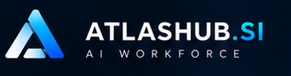
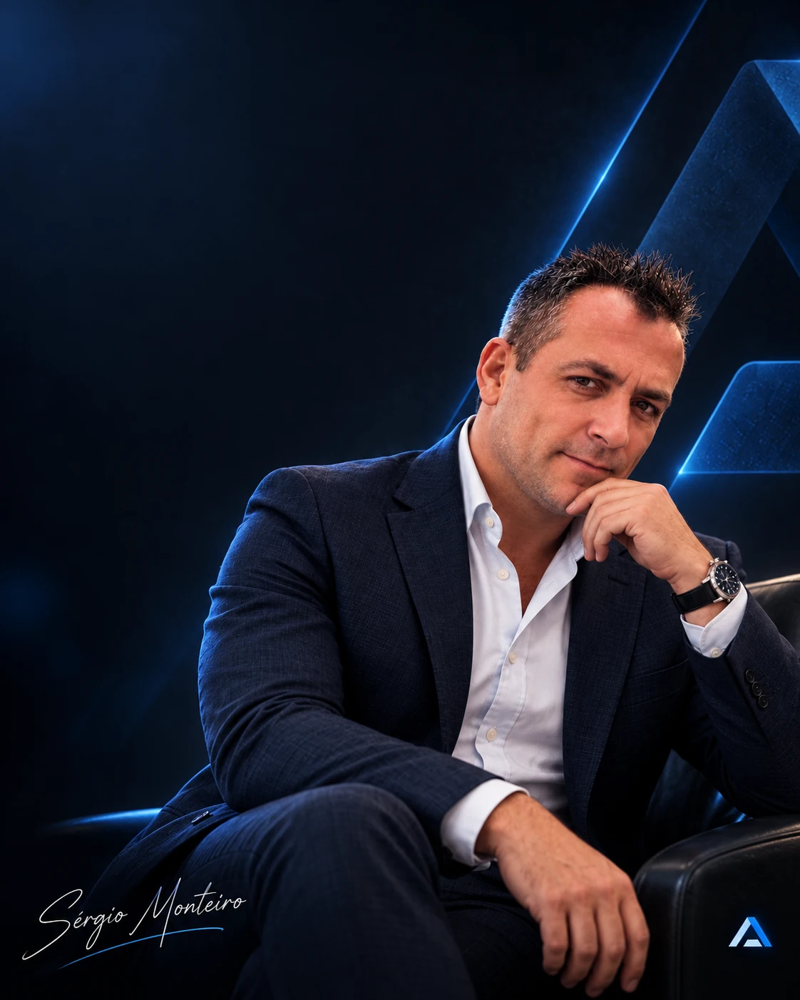

◈
Visão executiva
Compreenda o impacto da IA na organização, não apenas em ferramentas isoladas.

VER TODOS OS EVENTOS →
W01 · WORKSHOP EXECUTIVO
Empresa Aumentada 2027–2030: visão executiva para ligar pessoas, processos, dados e inteligência artificial numa organização mais capaz.
Com Sérgio Monteiro e a equipa AtlasHub
O QUE VAI LEVAR
Um percurso concebido para transformar conhecimento em decisões, aprendizagem ou ferramentas concretas.
Compreenda o impacto da IA na organização, não apenas em ferramentas isoladas.
Saia com um diagnóstico inicial das fricções e da capacidade de transformação.
Sessão complementar e 30 dias de comunidade moderada, com adesão voluntária.
VAGAS E CONFIRMAÇÃO
Local a divulgar em Anápolis/GO. Bilhete individual enviado após pagamento aprovado.
INSCRIÇÃO DIRETA
Participação individual e presencial, com bilhete após Pix aprovado. O local exato será comunicado por e-mail e WhatsApp antes do evento.
EXEMPLO VISUAL DO FORMULÁRIO
☑ Aceito os termos da inscrição e a política de privacidade.
Protótipo visual: este botão não gera cobrança.